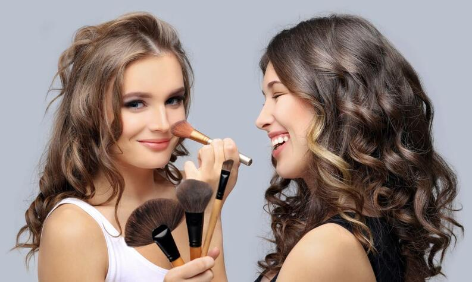
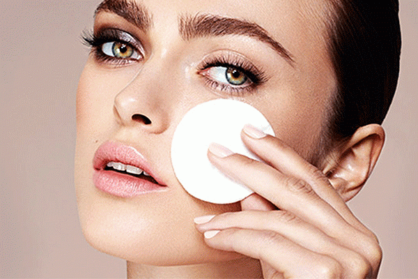
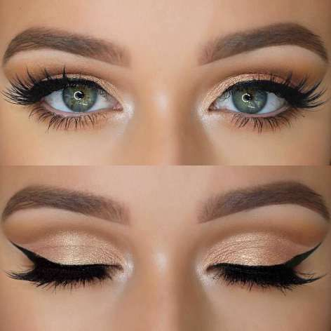

Make-up
Contenido:
Esta página es realizada con el objetivo de conocer las tecnicas basicas del maquillaje y lo que significa arreglar los rasgos faciales.
¿Que es el maquillaje?
Es todo producto o elemento que se utiliza para decorar,colorear o arreglar rasgos faciles de una persona. Este se compone de diversos elementos que cumplen con funciones especificas y son aplicados en partes determinadas del rostor con el fin de resaltar u ocultar ciertos rasgos.
Es cambiar la apariencia o embellecer el rostro,es utilizado para resaltar ciertos rasgos o ocultar "imperfecciónes", el maquillaje hace parte de prácticas que llegan a ser tendencias. El maquillaje puede llegar a transformar el rostro de una manera impresionante,por eso debemos aprender a utilizarlo adecuadamente y no en exceso ya que puede traer ciertas consecuencias mas adelante
Hay diferentes tecnicas el contorno, el horneado y el estroboscópico.
Contorno:Esta tecnica se utiliza para definir o resaltar pómulos, mentón y nariz.
Horneado:Sirve para lucir un efecto sin brillo y una larga duración en la zona que se desea resaltar. Se suele utilizar en la zona de ojera y el maxilar utilizando polvos traslucidos.
Estroboscópico:Es una tecnica mas natural solo se usa el iluminador.



Como preparar la piel
- Lavar el rostro con agua tibia
- Exfoliar el rostro
- Utilizar un tonico, preferiblemente que no contenga alcohol
- Hidratarla con una crema humectante
- Aplicar protector solar, para protegerla
Productos
Limpiar e hidratar la piel, utilizando un gel,agua micelar o agua de rosas ya que lavarsela solo con agua no es suficiente.
Peinar las cejas, hacerte la forma con la brocha y rellenar
Aplicar el primer se utiliza para alisar las lineas de expresion y prolongar la duración del maquillaje.
Aplicar la base que creas mas conveniente con tu tono de piel obteniendo un mejor resultado, para el uso de esta lo mejor es aplicar una gota moderada en la mano y extenderla con una brocha en el rostro.
Poner el corrector en las ojeras o donde tengamos alguna imperfeccion que queramos tapar
Aplicar polvos sueltos o compactos para matificar el rostro,especialmente si tienen la piel grasa.
Rubor o iluminador para que brille el rostro y tenga un poco mas de color, ayuda a resaltar los pómulos.
Aplicar sombras para que los ojos resalten, utilizar tonos claros para el centro y el lagrimal y para la parte exterior del párpado móvil.
Delinear los ojos (opcional) pero tratar de no hacer la linea muy gruesa si tienes parpado caido, ya que si aplicaste sombras no se te veria muy bien
Encrespar las pestañas
Si es de tu gusto aplicar pestañina "Mascara de pestañas" para que se te vean bonitas y con mas volumen
Y por ultimo aplicar tu labial favorito

Aqui tambien vendemos los productos a continuacion encontraras cada uno con su precio
Precios de productos
| Productos | Precio |
|---|---|
| Crema hidratante | $16.000 |
| Base liquida | $10.500 |
| Pestañina colossal lavable | $20.000 |
| Pestañina 3D | $6.000 |
| Corrector | $7.900 |
| Paleta de correctores | $15.000 |
| Labial liquido matte | $20.000 |
| Labial en barra humectante | $4.000 |
| Delineador en lapiz | $4.500 |
| Delineador liquido | $7.500 |
| Rubor individual | $5.000 |
| Rubor duo con espejo | $15.000 |
| Sombra individual | $5.500 |
| Paleta de sombras x3 | $7.000 |
| Paleta de sombras x12 | $22.000 |
| Paleta de sombras x18 | $30.000 |
| Iluminador y sombras todo en uno | $14.000 |
| Paleta de iluminadores | $28.000 |
| Pomada de cejas | $5.500 |
| Iluminador cremoso | $5.500 |
| Polvo compacto | $8.000 |
| Polvo suelto | $11.500 |
| Polvo traslucido | $12.000 |
| Agua micelar | $13.000 |
| Desmaquillador | $15.000 |
| Primer | $26.000 |
| FIjador de maquillaje | $26.500 |
 El maquillaje es la práctica de decorar la piel y otras partes visibles del cuerpo para resaltarlas o mejorar su aspecto. Por extensión, el término designa también los cosméticos que se emplean, tales como los lápices de labios y sombras de ojos.